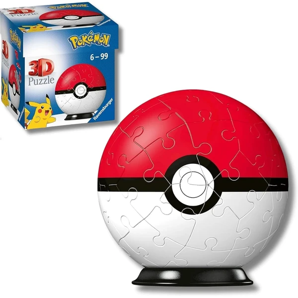

✨ Guía especial
Puzzle 3D Pokémon: el Puzzle Ball de Ravensburger
Qué es, cómo funciona y dónde comprarlo
Qué es, cómo funciona y dónde comprarlo
A diferencia de otras licencias como Harry Potter o Star Wars, el puzzle 3D de Pokémon no tiene una réplica arquitectónica ni un personaje de pie: es una esfera. En esta guía te contamos qué es el Puzzle Ball de Pokémon, por qué Ravensburger es prácticamente la única opción disponible, y dónde comprarlo.
El Puzzle Ball de Pokémon pertenece a la línea de esferas 3D de Ravensburger que ya vimos en el artículo dedicado a la marca: en lugar de una estructura plana o vertical, las piezas encajan formando una bola completa, con la imagen del Pokémon elegido (Pikachu es el más habitual) repartida por toda la superficie. Es un formato distinto al resto de licencias de la categoría, pensado para exponerse como pieza decorativa una vez montado, más que como maqueta de un escenario.

Poke Ball Ver en Amazon →A diferencia de licencias como Harry Potter o Torre Eiffel, donde compiten varias marcas, en el Puzzle Ball de Pokémon Ravensburger no tiene competencia real: es el único fabricante con licencia oficial para este formato de esfera aplicado a la franquicia, así que no hay comparativa de marcas que hacer aquí — la decisión se reduce a elegir el personaje o modelo concreto dentro del propio catálogo de Ravensburger.
El Puzzle Ball de Pokémon se encuentra principalmente en Amazon, donde suele haber más variedad de personajes disponibles de forma constante que en tienda física.
También se encuentra en Carrefour, aunque con disponibilidad más limitada y sujeta a campaña.
Es un puzzle 3D en forma de esfera de Ravensburger, con la imagen del Pokémon elegido repartida por toda la superficie — un formato distinto al resto de licencias de la categoría, pensado como pieza decorativa.
No de forma relevante — Ravensburger es prácticamente la única opción con licencia oficial para este formato aplicado a la franquicia.
Pikachu es el más común, aunque existen otras variantes dentro del catálogo de Ravensburger.
Principalmente en Amazon, con más variedad disponible de forma constante. También en Carrefour, sujeto a campaña.
Todos los tipos, materiales, marcas y modelos según la edad.